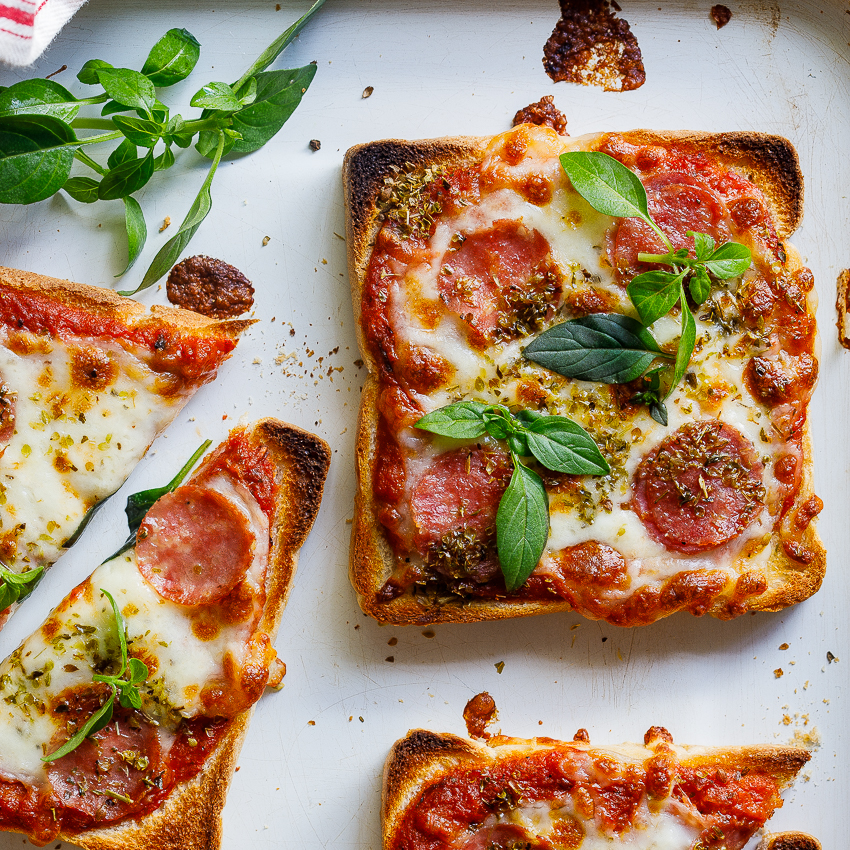

Easy Breezy Pizza Toast

Description
This quick and easy pizza toast combines the great taste of garlic bread and pizza into a scrumptious snack.
This tasty convenient snack makes a great movie time appetizer.
Ingredients
- 6 slices sourdough bread
- 1/4 cup butter
- 1 Tbsp garlic salt
- 1/2 cup marinara sauce
- 1 pkg shredded mozzarella cheese
- 1/2 cup pepperoni
- 1 Tbsp Italian seasoning
Steps
- Heat air fryer to 360 degrees F.
- Spread butter on bread and season with garlic salt. Add two tablespoons of marinara on garlic bread. Add mozarella cheese. Season with Italian seasoning.
- Cook at 360 degrees F in air fryer for 5-7 mins or until golden brown.
Return to home